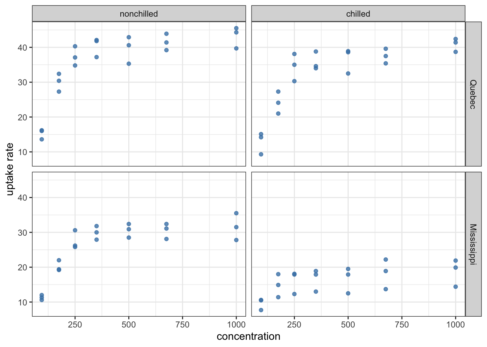
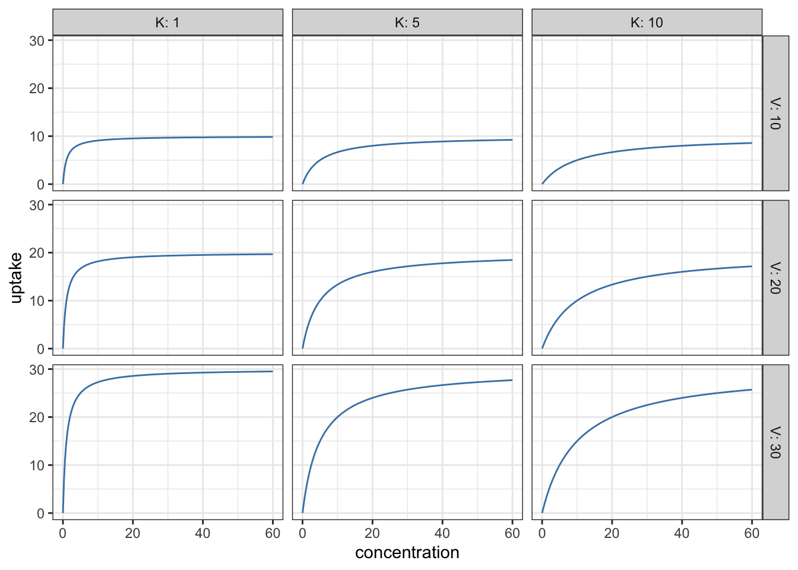
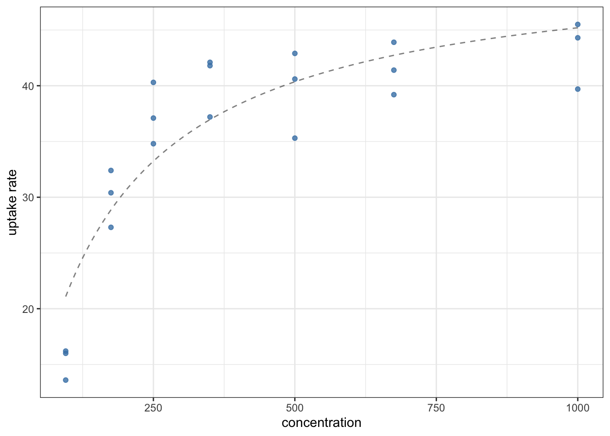

16More general linear models; nonlinear regression
16.1 Combining categorical and continuous variables in linear models
So far we have used at most two predictors when dealing with linear models (lm). This was in Chapter 15, where we looked the effects of two categorical variables, as well as their interaction. Chapter 13 introduced the idea of using a continuous, instead of a categorical, predictor. But we have not been combining these.
In fact, one can build arbitrarily complicated linear models from an arbitrary combination of continuous and categorical variables, and their interactions. Let us consider the built-in CO2 dataset as an example, which was already used before in an exercise (Section 15.3). Briefly, the data contain measurements from an experiment on the cold tolerance of the grass species Echinochloa crus-galli. The dataset has five columns: Plant (a unique identifier for each plant individual), Type (either Quebec or Mississippi depending on the origin of the plant), Treatment (whether the plant individual was chilled or nonchilled for the experiment), conc (ambient carbon dioxide concentration), and uptake (carbon dioxide uptake rate by the plant).
We can plot the observed distributions of CO2 uptake rates for each type and treatment:
as_tibble(CO2) |>ggplot(aes(x =0, y = uptake)) +geom_boxplot(color ="steelblue", fill ="steelblue",alpha =0.2, outlier.shape =NA) +geom_jitter(color ="steelblue", alpha =0.5, width =0.05) +facet_grid(Type ~ Treatment) +labs(y ="uptake rate") +theme_bw() +theme(axis.title.x =element_blank(), # The x-axis is meaningless here,axis.ticks.x =element_blank(), # so remove title, tick marks,axis.text.x =element_blank()) # and labels from it
This, however, is only part of the story, as becomes obvious if we also plot the ambient CO2 concentrations (conc) along the x-axis:
as_tibble(CO2) |>ggplot(aes(x = conc, y = uptake)) +geom_point(color ="steelblue", alpha =0.8) +facet_grid(Type ~ Treatment) +labs(x ="concentration", y ="uptake rate") +theme_bw()

We see that there is also a clear, saturating relationship between CO2 concentration and uptake rates that is definitely not linear. This does not mean that a linear model is useless for analyzing these data: the trend of whether the data increase or decrease can still be captured (although it is not recommended to use the model for numerical prediction purposes). One model that may come to mind is as follows:
lm(uptake ~ conc + Type * Treatment, data = CO2) |>anova()
In other words, the uptake rates are modeled via a combination of the effect of concentration (a continuous variable) plus the interaction of type and treatment (two categorical variables). Recall that Type * Treatment is shorthand for Type + Treatment + Type:Treatment, the sum of the main effects and the interaction between them. Mathematically, the equation for the model reads: \[
\begin{split}
(\text{uptake})_i &
= \beta_0
+ \beta_1 \cdot (\text{conc})_i
+ \beta_2 \cdot (\text{Type is Mississippi})_i \\ &
+ \beta_3 \cdot (\text{Treatment is chilled})_i \\ &
+ \beta_4 \cdot (\text{Type is Mississippi})_i \cdot(\text{Treatment is chilled})_i
+ \epsilon_i
\end{split}
\tag{16.1}\] where \((\text{conc})_i\) is a continuous predictor and not an indicator variable—that is, it takes on the actual value of the CO2 concentration in observation \(i\). By contrast, \((\text{Type is Mississippi})_i\) and \((\text{Treatment is chilled})_i\) are indicator variables that take on the value 1 if data point \(i\) belongs in their category and 0 otherwise.
The rationale for having chosen the model uptake ~ conc + Type * Treatment is that the box plots above reveal a potential interaction between the two factors Type and Treatment (the effect of changing Treatment from chilled to nonchilled depends on whether the Type was Quebec or Mississippi), and on top of this, we also want to capture the positive dependence on CO2 concentration. The ANOVA table above concurs: each of these categories come out with low p-values, indicating that what we see is unlikely to be due to just chance. To make sure that the assumptions on which this interpretation rests are held, we look at the diagnostic plots:
library(ggfortify)lm(uptake ~ conc + Type * Treatment, data = CO2) |>autoplot(smooth.colour =NA, colour ="steelblue", alpha =0.7) +theme_bw()
The Q-Q plot is not good: in the lower quantiles, the realized residuals are consistently larger in magnitude than the theoretical expectation based on the assumption of normality. This, of course, is a consequence of the data depending on concentrations in a manifestly nonlinear way. Apart from the Q-Q plot however, the diagnostics look surprisingly good. We will come back to the point about nonlinearity in Section 16.2.
It is also informative to apply the function summary on the model fit in addition to anova, to obtain the regression slopes and intercept (the \(\beta\) parameters of Equation 16.1):
lm(uptake ~ conc + Type * Treatment, data = CO2) |>summary()
Call:
lm(formula = uptake ~ conc + Type * Treatment, data = CO2)
Residuals:
Min 1Q Median 3Q Max
-16.4240 -2.3674 0.7641 3.8749 9.6278
Coefficients:
Estimate Std. Error t value Pr(>|t|)
(Intercept) 27.620528 1.627945 16.966 < 2e-16 ***
conc 0.017731 0.002225 7.969 1.00e-11 ***
TypeMississippi -9.380952 1.851185 -5.068 2.59e-06 ***
Treatmentchilled -3.580952 1.851185 -1.934 0.0566 .
TypeMississippi:Treatmentchilled -6.557143 2.617972 -2.505 0.0143 *
---
Signif. codes: 0 '***' 0.001 '**' 0.01 '*' 0.05 '.' 0.1 ' ' 1
Residual standard error: 5.999 on 79 degrees of freedom
Multiple R-squared: 0.7072, Adjusted R-squared: 0.6923
F-statistic: 47.69 on 4 and 79 DF, p-value: < 2.2e-16
Regardless of how good this model looks, one can argue based on the plot of the data that there could also be an interaction between conc and the other two factors. After all, the saturation levels of the uptake rate are always higher in Quebec than in Mississippi, and the effect of chilling also depends on Type. A model which accounts for all these effects and their interactions is uptake ~ conc * Type * Treatment. Mathematically: \[
\begin{split}
(\text{uptake})_i &
= \beta_0
+ \beta_1 \cdot (\text{conc})_i
+ \beta_2 \cdot (\text{Type is Mississippi})_i \\ &
+ \beta_3 \cdot (\text{Treatment is chilled})_i \\ &
+ \beta_4 \cdot (\text{conc})_i \cdot (\text{Type is Mississippi})_i \\ &
+ \beta_5 \cdot (\text{conc})_i \cdot (\text{Treatment is chilled})_i \\ &
+ \beta_6 \cdot (\text{Type is Mississippi})_i \cdot (\text{Treatment is chilled})_i \\ &
+ \beta_7 \cdot (\text{conc})_i \cdot (\text{Type is Mississippi})_i
\cdot (\text{Treatment is chilled})_i
+ \epsilon_i
\end{split}
\tag{16.2}\]
(The \(\beta_7\) term is multiplied by a three-way interaction of concentration, type, and treatment.) Fitting the model and creating diagnostic plots:
lm(uptake ~ conc * Type * Treatment, data = CO2) |>anova()
lm(uptake ~ conc * Type * Treatment, data = CO2) |>summary()
Call:
lm(formula = uptake ~ conc * Type * Treatment, data = CO2)
Residuals:
Min 1Q Median 3Q Max
-14.3773 -2.7602 0.9517 3.7368 10.7414
Coefficients:
Estimate Std. Error t value Pr(>|t|)
(Intercept) 25.585034 2.255256 11.345 < 2e-16 ***
conc 0.022410 0.004295 5.218 1.52e-06 ***
TypeMississippi -7.131741 3.189414 -2.236 0.0283 *
Treatmentchilled -4.163993 3.189414 -1.306 0.1956
conc:TypeMississippi -0.005171 0.006074 -0.851 0.3973
conc:Treatmentchilled 0.001340 0.006074 0.221 0.8259
TypeMississippi:Treatmentchilled -1.747509 4.510513 -0.387 0.6995
conc:TypeMississippi:Treatmentchilled -0.011057 0.008589 -1.287 0.2019
---
Signif. codes: 0 '***' 0.001 '**' 0.01 '*' 0.05 '.' 0.1 ' ' 1
Residual standard error: 5.789 on 76 degrees of freedom
Multiple R-squared: 0.7376, Adjusted R-squared: 0.7134
F-statistic: 30.52 on 7 and 76 DF, p-value: < 2.2e-16
lm(uptake ~ conc * Type * Treatment, data = CO2) |>autoplot(smooth.colour =NA, colour ="steelblue", alpha =0.7) +theme_bw()
This confirms what we saw on the plot of the data: that the basic shape of the relationship between concentration and uptake is unaffected by either Type or Treatment (i.e., the term conc:Type:Treatment in the ANOVA table has a high associated p-value). It also illustrates the general point that there are very often multiple candidate models, and choosing between them is a question of judgment, trial-and-error, and successively improving the model structure based on results from earlier modeling attempts.
16.2 Nonlinear regression
The relationship between CO2 concentration and uptake rates are definitely not linear, regardless of treatment or type. So the question arises: can one fit a nonlinear function to these data? As an example, let us focus on just Quebec and the nonchilled treatment, to better illustrate the ideas behind nonlinear regression. Here are the data:
If the function we wish to fit is not linear, we have to specify its shape. One commonly used shape for describing the above saturating pattern is the Michaelis–Menten curve. This is given by the following equation: \[ \rho = \frac{V c}{K + c} \] Here \(\rho\) is the uptake rate, \(c\) is the concentration, and \(V\) and \(K\) are two parameters which can modify the shape of the function. The figure below illustrates what curves one can get by varying these parameters:
expand_grid(V =c(10, 20, 30), # This function creates a tibble with allK =c(1, 5, 10), # possible combinations of the inputsconcentration =seq(0, 60, l =201)) |>group_by(V, K) |>mutate(uptake = V * concentration / (K + concentration)) |>ungroup() |>ggplot(aes(x = concentration, y = uptake)) +geom_line(color ="steelblue") +facet_grid(V ~ K, labeller = label_both) +theme_bw()

The task is to find the values of \(V\) and \(K\) that provide the best fit to the data. Like in the case of linear regression, this can be done via the least-squares criterion: the best fit is provided by the curve which minimizes the sum of the squared deviations of the observed points from it. Unlike with linear regression however, this curve can be very difficult to find. In fact, there is no known general procedure that would be able to minimize the sum of squares under all circumstances. What algorithms can do is to find the best fit, given some initial guesses for the parameters that are at least not violently off of the true values. Just how close the guess needs to be is context-dependent, and highlights an important problem: nonlinear regression can be as much an art as it is a science. For the types of curves we will be fitting though, the more subtle problems will never come up, and a “good enough” initial guess can vary within a relatively wide range.
So, how can one guess the values of \(V\) and \(K\)? To do this, one has to have an understanding of how the parameters influence the curves. For \(V\), this interpretation is not difficult to infer. Notice that if concentrations are very, very large, then in the denominator of the formula \(\rho = V c / (K + c)\), we might as well say that \(K + c\) is approximately equal to \(c\) (if \(c\) is a million and \(K\) is one, then one is justified in treating the sum as being about one million still). This means that for large \(c\), the formula reduces to \(\rho \approx V c / c = V\). In other words \(V\) is the saturation uptake rate: the maximum value of the uptake. This, incidentally, is clearly visible in the plots above: when \(V\) is 10 (top row), the curves always tend towards 10 for large concentrations; when \(V\) is 20, they tend towards 20 (middle row), and when \(V\) is 30, they tend towards 30.
The interpretation of \(K\) is slightly less straightforward, but still simple. To see what it means, let us ask what the uptake rate would be, were the concentration’s value equal to \(K\). In that case, we get \(\rho = V K / (K + K)\) (we simply substituted \(c = K\) into the formula), or \(\rho = VK / (2K) = V/2\). That is, \(K\) is the concentration at which the uptake rate reaches half its maximum.
Looking at the data again, both these parameters can be roughly estimated:
as_tibble(CO2) |>filter(Type =="Quebec", Treatment =="nonchilled") |>ggplot(aes(x = conc, y = uptake)) +geom_point(color ="steelblue", alpha =0.8) +geom_hline(yintercept =43, linetype ="dashed", color ="steelblue") +annotate(geom ="segment", x =0, y =43/2, xend =125, yend =43/2,linetype ="dashed", color ="steelblue") +annotate(geom ="segment", x =125, y =43/2, xend =125, yend =0,linetype ="dashed", color ="steelblue") +scale_x_continuous(name ="concentration",limits =c(0, NA), expand =c(0, 0)) +scale_y_continuous(name ="uptake rate",limits =c(0, NA), expand =c(0, 0)) +theme_bw()
So guessing that \(V\) is about 43 and \(K\) is about 125 seems to be close to the mark.
To actually perform the nonlinear regression, one can use the nls function (“Nonlinear Least Squares”). It begins much like lm, taking a formula and a data frame. However, the formula is no longer a shorthand notation for a linear model, and therefore has to be entered literally. Additionally, there is another argument to nls called start; this is where the starting values have to be specified. The start argument has to be in the form of a list. Lists are an important data structure, worth a little interlude to explain how they work.
16.2.1 Interlude: lists
Lists are like vectors except they can hold arbitrary data in their entries. So unlike vectors which are composed of either all numbers or all character strings or all logical values, lists may have a combination of these. Furthermore, list entries are not restricted to elementary types: vectors, or even data frames may also be list entries. To define a list, all one needs to do is type list, and then give a sequence of named entries. For example, the following creates a list with three entries: a will be equal to 3, b to the string "Hello!", and myTable to a small tibble.
list(a =3, b ="Hello!", myTable =tibble(x =c(1, 2), y =c(3, 4)))
$a
[1] 3
$b
[1] "Hello!"
$myTable
# A tibble: 2 × 2
x y
<dbl> <dbl>
1 1 3
2 2 4
One can refer to the entries of the list either with the $ notation, or using double brackets. Assigning the above list to a variable called myList first:
myList <-list(a =3,b ="Hello!",myTable =tibble(x =c(1, 2), y =c(3, 4)))
We can now access the entries of myList either as
myList$myTable # Access the entry called myTable in the list
# A tibble: 2 × 2
x y
<dbl> <dbl>
1 1 3
2 2 4
Or as
myList[[3]] # Access the third entry (myTable) in the list
# A tibble: 2 × 2
x y
<dbl> <dbl>
1 1 3
2 2 4
The $ notation is the same as when one accesses columns of data frames. This is not a coincidence: internally, data frames are represented as lists of columns, with each column being a vector. It follows that the double-bracket notation can also be used in conjunction with data frames: to access the first column of CO2, we can not only write CO2$Plant, but also CO2[[1]].
A list seems to be just a more flexible version of a vector—so why would we want to use vectors instead of lists in the first place? The answer has to do with efficiency: the price to pay for the increased flexibility offered by lists is that they are slower to do operations on. While this would not be a problem for the applications found in this book, it can become important when dealing with large datasets or heavy numerical computations. As a corollary, R has many useful functions which work on vectors but do not work by default on lists. To mention just the simplest examples: mean, median, sd, and sum will throw an error when applied to lists. That is,
sum(c(1, 2, 3))
[1] 6
returns the expected 6, because it was applied to a vector. But the same expression results in an error when the vector is replaced by a list:
sum(list(1, 2, 3))
Error in sum(list(1, 2, 3)): invalid 'type' (list) of argument
16.2.2 Back to nonlinear regression
With this brief introduction to lists, we now understand what it means that the start argument to nls must be a list, with the entries named after the parameters to be fitted. Using the previously-guessed values of \(V\) and \(K\) being around 43 and 125, respectively, means we can use start = list(V = 43, K = 125). We can now look at the nls function and use it to produce a fit of the Michaelis–Menten curve to our data:
nonlinearFit <-as_tibble(CO2) |>filter(Type =="Quebec", Treatment =="nonchilled") |>nls(uptake ~ V*conc/(K + conc), data = _, start =list(V =43, K =125))print(nonlinearFit)
Nonlinear regression model
model: uptake ~ V * conc/(K + conc)
data: filter(as_tibble(CO2), Type == "Quebec", Treatment == "nonchilled")
V K
51.36 136.32
residual sum-of-squares: 319.2
Number of iterations to convergence: 6
Achieved convergence tolerance: 9.722e-06
Observe that in the formula, we use the column name conc when we want to use the data inside that column, but use made-up names (in this case, V and K) for the unknown parameters we are trying to obtain. Their starting values were filled in from our earlier visual estimation. From these starting values, the best fitting solution is found. We see that their values are 51.36 for \(V\) and 136.32 for \(K\).
The result of nls can be used inside summary to get more information on the fitted parameters (note: the anova function is not applicable to nonlinear regression). Doing so results in the following regression table:
summary(nonlinearFit)
Formula: uptake ~ V * conc/(K + conc)
Parameters:
Estimate Std. Error t value Pr(>|t|)
V 51.359 2.831 18.140 1.86e-13 ***
K 136.319 27.027 5.044 7.21e-05 ***
---
Signif. codes: 0 '***' 0.001 '**' 0.01 '*' 0.05 '.' 0.1 ' ' 1
Residual standard error: 4.099 on 19 degrees of freedom
Number of iterations to convergence: 6
Achieved convergence tolerance: 9.722e-06
As in the case of linear regression, the statistical analysis will only be reliable if the assumptions of the independence, normality, and homoscedasticity of the residuals are maintained.
To conclude this section, it can be useful to plot the data together with the fitted nonlinear curve, to make sure visually that the fit is reasonable. There are several possible ways of doing this; here we discuss two of them. First, one can rely on the predict function (Section 13.5) that will tell us, for each value of the predictor, what the model-predicted values are. In the same way as for models generated by lm or mblm,
returns a vector for each conc in the original data, documenting what the model thinks the corresponding uptake rate ought to be. They can then be compared with the data:
as_tibble(CO2) |>filter(Type =="Quebec", Treatment =="nonchilled") |>mutate(pred =predict(nonlinearFit)) |>ggplot() +geom_point(aes(x = conc, y = uptake), color ="steelblue", alpha =0.8) +geom_line(aes(x = conc, y = pred), linetype ="dashed", alpha =0.5) +labs(x ="concentration", y ="uptake rate") +theme_bw()
In the above plot, the data points and the predictions each had their own set of aeshetics. For this reason, the aesthetic mappings were not defined separately, but locally inside each geom_. This is perfectly legal, and can help whenever different geometries take different aesthetics from the data. Second, notice that the prediction was drawn with a dashed, semi-transparent line. This is intentional, to make it distinct from data. It signals that the curve does not correspond to data we are plotting, but to a model’s predictions.
The second method can be useful if the data are sufficiently scarce that the fitted line looks “rugged”, a bit too piecewise (this can be seen in the above example as well if one looks carefully). In that case, it is possible to draw the curve of any function using geom_function. We can use the fitted parameters in drawing it, and it will not suffer from being too piecewise:
V_fitted <-coef(nonlinearFit)["V"] # Get fitted values of V and KK_fitted <-coef(nonlinearFit)["K"] # from the vector of coefficientsas_tibble(CO2) |>filter(Type =="Quebec", Treatment =="nonchilled") |>ggplot() +geom_point(aes(x = conc, y = uptake), color ="steelblue", alpha =0.8) +geom_function(fun =function(x) V_fitted * x / (K_fitted + x),linetype ="dashed", alpha =0.5) +labs(x ="concentration", y ="uptake rate") +theme_bw()

The result is much the same as before, although carefully looking at the dashed line shows that the second curve is smoother than the first. In this case, this does not matter much, but it could be aesthetically more relevant in others.
16.3 Exercises
16.3.0.1 Exponential growth
Let \(N(t)\) be the population abundance of some organism at time \(t\). An exponentially growing population increases according to \[ N(t) = N_0 \mathrm{e}^{rt} \] where \(N_0\) is the initial population size at time \(t=0\), and \(r\) is the exponential rate of increase.
Use nls() to fit the above exponential growth model to this dataset. Do not treat \(N_0\) as a free parameter, but instead use the actual population size at time \(t=0\). This leaves \(r\) as the only parameter to be fitted. Do so, using an appropriate starting value.
Assume that the data describes a population of water lilies, and that a single ‘individual’ weighs 1 gram. If the population would continue to grow unrestricted, what would be its biomass after nine months (about 280 days)? What object would have a comparable weight to this population, and what does that tell us about unrestricted population growth in general?
16.3.0.2 Nitrogen uptake
Cedergreen and Madsen (2002) reported data from an experiment on nitrogen uptake by the duckweed Lemna minor, where the predictor variable is the initial substrate concentration and the response variable is the uptake rate. In this type of experiment, it is anticipated that the uptake will increase as the concentration increases, approaching a horizontal asymptote. The data are available in uptake.csv.
Create a plot of the data, with the nitrogen concentrations along the x-axis and the corresponding uptake rates along the y-axis.
Fit a Michaelis-Menten model (describing saturating dynamics) to the data. This model is given by \[ \rho = \frac{V c}{K + c} \] where \(V\) and \(K\) are two constants, \(c\) is the concentration, and \(\rho\) the uptake rate. Make initial guesses for the two parameters \(V\) and \(K\) based on the graph, and perform the nonlinear regression.
Given your nonlinear regression results, what is the maximum possible nitrogen uptake rate of L. minor?
16.3.0.3 Logistic growth
The simplest model illustrating population regulation and regulated growth is the logistic model, defined by the differential equation \[ \frac{\mathrm{d} N(t)}{\mathrm{d} t} = rN(t) \left( 1 - \frac{N(t)}{K} \right) \] Here \(N(t)\) is the population abundance at time \(t\), \(r\) is the exponential growth rate of the population when rare, and \(K\) is the maximum abundance it can sustainably achieve (the “carrying capacity”). It should be obvious that when \(N(t) = K\), the derivative vanishes, signalling that the population size no longer changes.
The above differential equation is one of the few which can be solved explicitly. Its solution reads \[ N(t) = N_0 \frac{\mathrm{e}^{rt}}{1-(1-\mathrm{e}^{rt})(N_0/K)} \] where \(N_0\) is the initial population size at time \(t=0\). Let us fit this model to some population growth data.
Download the data file pop_growth_2.csv, load it in R, and plot the population abundances against time.
Fit the above model to the data using the nls() function, with appropriate guesses for the starting values of \(r\) and \(K\).
Plot the data and the model prediction together. What are the estimated values of \(r\) and \(K\)?